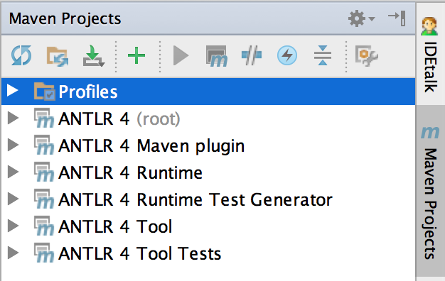

1. Building ANTLR
Most programmers do not need the information on this page because they will simply download the appropriate jar(s) or use ANTLR through maven (via ANTLR's antlr4-maven-plugin). If you would like to fork the project and fix bugs or tweak the runtime code generation, then you will almost certainly need to build ANTLR itself. There are two components:
- the tool that compiles grammars down into parsers and lexers in one of the target languages
- the runtime used by those generated parsers and lexers.
I will assume that the root directory is /tmp for the purposes of explaining how to build ANTLR in this document.
As of 4.6, ANTLR tool and Java-target runtime requires Java 7.
2. Get the source
The first step is to get the Java source code from the ANTLR 4 repository at github. You can download the repository from github, but the easiest thing to do is simply clone the repository on your local disk:
$ cd /tmp
/tmp $ git clone https://github.com/antlr/antlr4.git
Cloning into 'antlr4'...
remote: Counting objects: 61480, done.
remote: Total 61480 (delta 0), reused 0 (delta 0), pack-reused 61480
Receiving objects: 100% (61480/61480), 31.24 MiB | 7.18 MiB/s, done.
Resolving deltas: 100% (32970/32970), done.
Checking connectivity... done.
Checking out files: 100% (1427/1427), done.
3. Check your environment
If you are starting from a clean, minimum Ubuntu OS, check your environment.
$ sudo apt-get update
$ # Get Java
$ java > /dev/null 2>&1
$ if [[ "$?" != "0" ]]; then sudo apt install -y openjdk-11-jre-headless; fi
$ # Get Mvn
$ mvn > /dev/null 2>&1
$ if [[ "$?" != "0" ]]; then sudo apt install -y maven; fi
4. Compile
$ cd /tmp/antlr4
$ export MAVEN_OPTS="-Xmx1G" # don't forget this on linux
$ mvn clean # must be separate, not part of install/compile
$ mvn -DskipTests install
...
[INFO] ------------------------------------------------------------------------
[INFO] Reactor Summary:
[INFO]
[INFO] ANTLR 4 ............................................ SUCCESS [ 0.287 s]
[INFO] ANTLR 4 Runtime .................................... SUCCESS [ 4.915 s]
[INFO] ANTLR 4 Tool ....................................... SUCCESS [ 1.315 s]
[INFO] ANTLR 4 Maven plugin ............................... SUCCESS [ 2.393 s]
[INFO] ANTLR 4 Runtime Test Annotations ................... SUCCESS [ 0.078 s]
[INFO] ANTLR 4 Runtime Test Processors .................... SUCCESS [ 0.019 s]
[INFO] ANTLR 4 Runtime Tests (2nd generation) ............. SUCCESS [ 1.986 s]
[INFO] ANTLR 4 Tool Tests ................................. SUCCESS [ 0.513 s]
[INFO] ------------------------------------------------------------------------
[INFO] BUILD SUCCESS
[INFO] ------------------------------------------------------------------------
[INFO] Total time: 12.005 s
[INFO] Finished at: 2016-11-21T11:42:42-08:00
[INFO] Final Memory: 52M/434M
[INFO] ------------------------------------------------------------------------
NOTE: We do install not compile as tool tests and such refer to modules that must be pulled from the maven install local cache.
5. Installing libs to mvn cache locally
To skip the tests (which require all the target languages be installed) and install into local repository ~/.m2/repository/org/antlr, do this:
$ export MAVEN_OPTS="-Xmx1G" # don't forget this on linux
$ mvn install -DskipTests=true # make sure all artifacts are visible on this machine
You should see these jars (when building 4.6-SNAPSHOT):
/Users/parrt/.m2/repository/org/antlr $ find antlr4* -name '*.jar'
antlr4-maven-plugin/4.6-SNAPSHOT/antlr4-maven-plugin-4.6-SNAPSHOT.jar
antlr4-runtime-test-annotation-processors/4.6-SNAPSHOT/antlr4-runtime-test-annotation-processors-4.6-SNAPSHOT.jar
antlr4-runtime-test-annotations/4.6-SNAPSHOT/antlr4-runtime-test-annotations-4.6-SNAPSHOT.jar
antlr4-runtime-testsuite/4.6-SNAPSHOT/antlr4-runtime-testsuite-4.6-SNAPSHOT-tests.jar
antlr4-runtime-testsuite/4.6-SNAPSHOT/antlr4-runtime-testsuite-4.6-SNAPSHOT.jar
antlr4-runtime/4.6-SNAPSHOT/antlr4-runtime-4.6-SNAPSHOT.jar
antlr4-tool-testsuite/4.6-SNAPSHOT/antlr4-tool-testsuite-4.6-SNAPSHOT.jar
antlr4/4.6-SNAPSHOT/antlr4-4.6-SNAPSHOT-tests.jar
antlr4/4.6-SNAPSHOT/antlr4-4.6-SNAPSHOT.jar
Note that ANTLR is written in itself, which is why maven downloads antlr4-4.5.jar for boostrapping 4.6-SNAPSHOT purposes.
6. Testing tool and targets
7. Building without testing
To build without running the tests (saves a lot of time), do this:
$ mvn -DskipTests install
7.1. Building ANTLR in Intellij IDE
After download ANTLR source, just "import project from existing sources" and click on the "Maven Projects" tab in right gutter of IDE. It should build stuff in the background automatically and look like:
